[[TOC]]
The Elements panel lets you view structured information about the current page. In today's applications, the HTML markup served on an initial page load is not necessarily what you'll see in the Document Object Model (DOM) tree. Having a real-time representation of the page can be a powerful tool when debugging and authoring web pages.
You can use the Elements panel for a variety of tasks:
To make better use of screen real estate, you may find it convenient to follow these workspace tips:
The DOM tree view displays the DOM structure of the current web page. The DOM tree is a tree of DOM nodes that represent individual HTML elements, such as <body> and <p>. For ease of reading, the DOM tree view displays the HTML element tags instead of the DOM node types: for example, <p> instead of HTMLParagraphElement.
The DOM tree view shows the current state of the tree. This may not match the HTML that was originally loaded for a number of reasons:
Inspecting an element shows you the DOM nodes and CSS responsible for a rendered element in the browser.
There are several ways to inspect an element:
inspect() method in the console, such as inspect(document.body). See the Command-Line API for information on using inspect.You can navigate through the DOM structure using either mouse or keyboard.
Expanding a node automatically selects its first child, so you can expand a deeply-nested structure by pressing the Right arrow repeatedly.
As you navigate, the Elements panel shows a breadcrumb trail in the bottom bar:
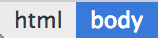
The currently selected node is highlighted in blue. Navigating down the structure extends the trail:
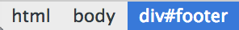
Navigating back up the structure moves the highlight:
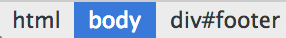
DevTools displays as many items as possible in the trail.
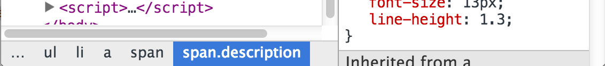
If the entire trail doesn't fit in the status bar, an ellipsis (...) shows where the trail has been truncated. Click the ellipsis to show the hidden elements.
For a complete list of keyboard shortcuts, see: https://developers.google.com/chrome-developer-tools/docs/shortcuts
The Elements panel lets you modify the DOM:
Updating the in-memory DOM tree doesn't modify the source files. Reloading the page erases any DOM tree modifications.
For DOM nodes, double click the opening Element tag (h2, section, img). The field is now editable and can be renamed, the closing tag is automatically updated after renaming.
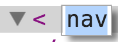
For DOM attributes, DevTools differentiates between the attribute name and value, click on either of these respective portions to make them editable.
When edit mode is active, cycle through attribute values by pressing Tab. Once you reach the last attribute value, pressing tab again creates a new attribute field.
Using Tab is not the only way to add and edit attributes, since it's a common pattern, there are dedicated items for it in the DOM node context menu titled Add Attribute and Edit Attribute.
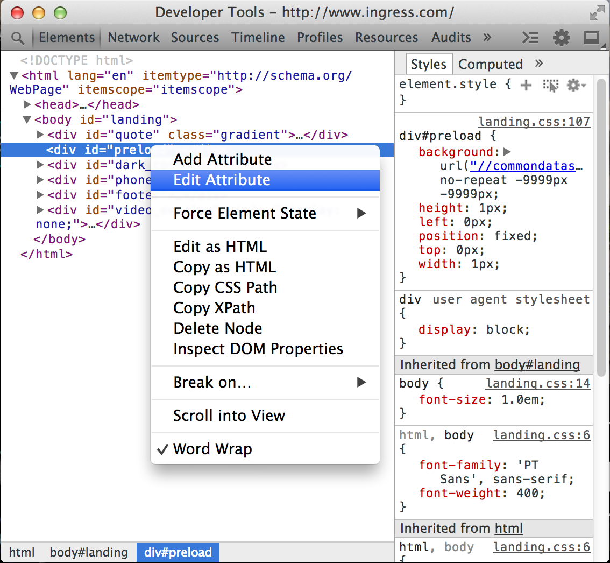
To edit a DOM node and its children as HTML:
Use the editable field to make your changes.
Press Esc to stop editing without modifying the DOM.
You can rearrange the DOM tree in the Elements panel to test out different arrangements for the page.
Drag a node within the Elements panel to move it to a new position in the DOM tree.
Remove DOM nodes by using any of the following techniques:
You can also remove an element by deleting its tag when using Edit as HTML.
If you delete a node by accident, use Ctrl + Z (or Cmd + Z on Mac) to undo your last action.
When you hover over or select a DOM node, the rendered element is highlighted in the main browser window. If the element is scrolled offscreen, a tooltip is displayed at the edge of the browser window indicating that the selected element is offscreen.
To scroll the page so the element appears in the viewport, Right-click the element and select Scroll into View.
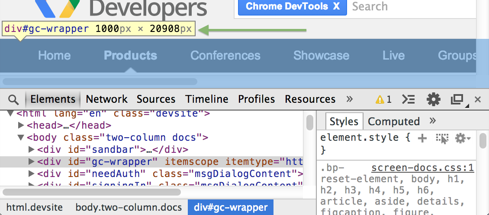
A DOM breakpoint is similar to a breakpoint in the Sources panel. It's used to pause execution of the running JavaScript under certain conditions. A JavaScript breakpoint is associated with a specific line of a JavaScript file, and is triggered when the line is reached. A DOM breakpoint is associated with a specific DOM element, and is triggered when the element is modified in some way.
You can use a DOM breakpoint to debug complex JavaScript applications, when you're not sure what part of the JavaScript is updating a given element.
For example, if your JavaScript is changing the styling of a DOM element, you can set a DOM breakpoint to fire when the element's attributes are modified.
Subtree Modifications
A subtree modification breakpoint is triggered when a child element is added, removed, or moved. For example, if you set a subtree modification breakpoint on the 'main-content' element, the following code triggers the breakpoint:
var element = document.getElementById('main-content');
//modify the element's subtree
var mySpan = document.createElement('span');
element.appendChild( mySpan );
Attributes Modifications
An attribute modification occurs when the attribute of an element (class, id, name) is changed dynamically:
var element = document.getElementById('main-content');
// class attribute of element has been modified
element.className = 'active';
Node Removal
A node removal modification is triggered when the node in question is removed from the DOM:
document.getElementById('main-content').remove();
In the animation above, the following steps occur:
The Elements and Sources panels both include a pane for managing your DOM Breakpoints.
To see all of your DOM breakpoints, click the expander arrow next to DOM Breakpoints to show the pane. Each breakpoint is listed with an element identifier and the breakpoint type.
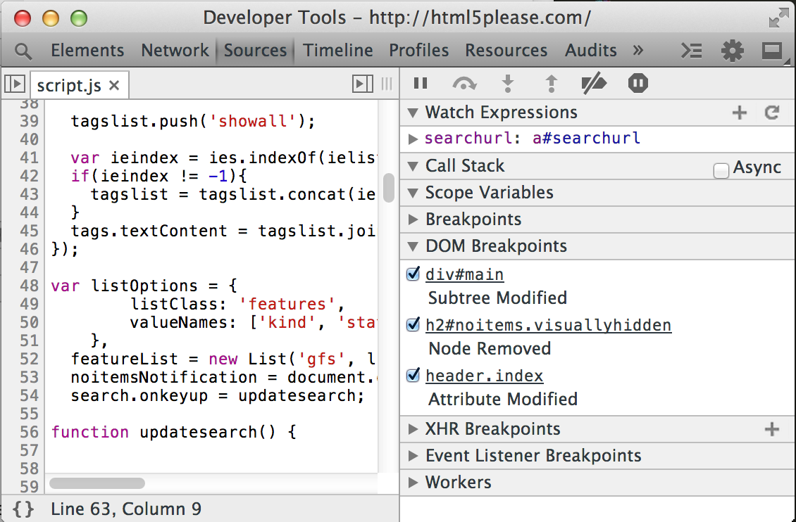
You can interact with each listed breakpoint in any of the following ways:
When you trigger a DOM breakpoint, the breakpoint is highlighted in the DOM Breakpoints pane. The Call Stack pane displays the reason for a debugger pause:
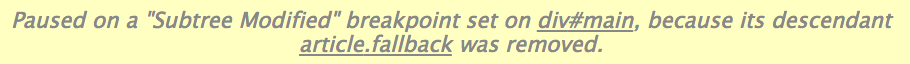
View JavaScript event listeners associated with a DOM node in the Event Listeners pane.
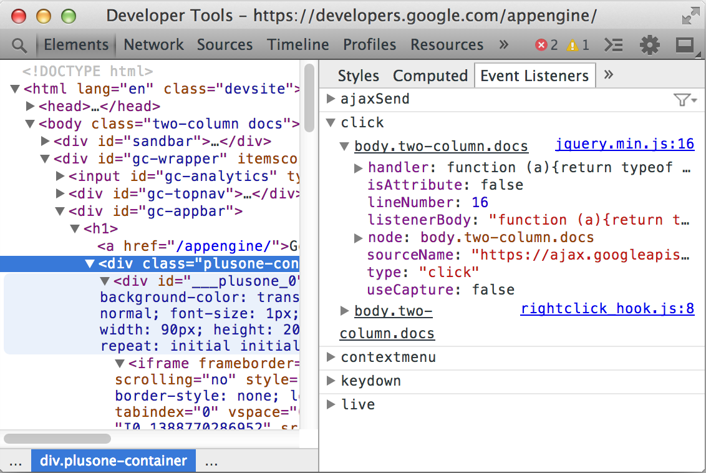
The top-level items in the Event Listeners pane show the event types that have registered listeners.
Click the expander arrow next to the event type (for example click) to see a list of registered event handlers. Each handler is identified by a CSS-selector like element identifier, such as "document" or "button#call-to-action". If more than one handler is registered for the same element, the element is listed repeatedly.
Click the expander arrow next to an element identifier to see the properties of the event handler. The Event Listeners pane lists the following properties for each listener:
onclick).click).addEventListener was set.By default, registered event handlers display for the following types of elements:
If you find it excessive to view all event handlers, including those registered using event delegation, click Filter 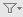 and select the menu item Selected Node Only which limits displayed event listeners to only those registered directly on the element.
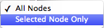
Note: Many Chrome extensions add their own event listeners onto the DOM.
If you see a number of event listeners that aren't set by your code, you may want to reopen your page in an Incognito window. Incognito windows prevent extensions from running by default.
CSS defines the presentation layer of your page. You can view and modify any CSS declaration which affects an element on the current page. An understanding of the cascade (in Cascading Style Sheets) and inheritance aids a development and debugging workflow:
See the W3C documentation on cascading and inheritance for more information: http://www.w3.org/TR/CSS2/cascade.html
The Styles pane shows the CSS rules that apply to the selected element, from highest priority to lowest:
span matches an HTML <span> element. 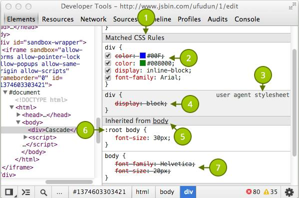
The labels on the image above correspond with the numbered items below.
display: inline-block; overrides the user-agent defined style of display: block.:root body has a higher specificity than just body, therefore its style declarations take precedence.font-family on the body is overridden. It is also a similar case for the font-size property (overridden due to selector specificity)Comma separated selectors are colored differently depending on whether or not they match the selected DOM node.
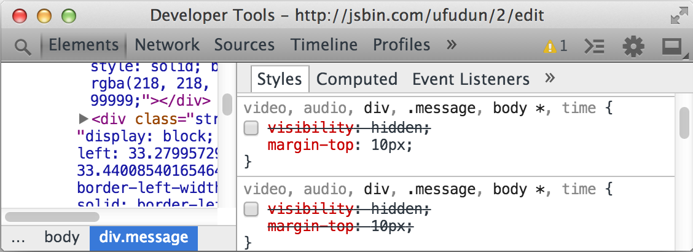
Greyed out selectors like audio and video do not apply to the selected node. The rules shown above corresponds to the following CSS source:
video, audio, div, .message, body *, time {
/* visibility: hidden */
margin-top: 10px;
}
Since the visibility declaration is commented out, the Styles pane shows it as disabled.
Use the shortcut Ctrl + Click (or Cmd + Click on Mac) on CSS properties or property values from the styles pane to navigate to their position in the source code within the Sources panel.
You can add or edit styles within the Styles pane in the Elements panel. Unless the area containing the styling information is greyed out (as is the case with user agent stylesheets), all styles are editable. Edit styles in the following ways:
To enable or disable a style declaration, check or uncheck the checkbox next to it.
Click a CSS property name to edit the name:
Click on a property value to edit the value. If you're editing a property name, press Tab or Enter to edit the property value.
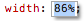
By default, your CSS modifications are not permanent, changes are lost when you reload the page. To customise the behaviour, see Workspaces.
When editing a numeric CSS property value, you can increment and decrement numeric CSS property values using the following shortcuts:
Click an empty space within an editable CSS rule to create a new style. Edit mode now applies to the CSS property field, you can now enter a new property.
To add a new property and view code hints in the CSS property field, follow these steps:
After you have selected a valid CSS property, bring up suggestions for applicable CSS values by moving focus to the CSS property value field. For example, the property display suggests values such as block, flex, none, and others.
Paste CSS into the Styles pane using Ctrl + V (or Cmd + V on Mac). Properties and their values are parsed and entered into the correct fields.
You may find it preferable to add styles along with a new selector. Click New Style Rule within the styles pane header bar to generate a new CSS rule.
You can provide dynamic styling for your UI elements using pseudo-class selectors such as :hover. However, these dynamic states can be hard to debug. So DevTools lets you manually set pseudo-classes on individual elements.
You may trigger any combination of the following four pseudo-classes:
To set an element's state:
 next to New Style Rule within the styles pane header.
next to New Style Rule within the styles pane header.Local modifications contain independent changes made to source files such as JavaScript and CSS.
Locate the local modifications pane using the following steps:
To create modifications, edit source code through the editor in the Sources panel.
Make a modification to a CSS rule which originates from an external style sheet and notice the change shows in the local modifications pane.
Note: When you create a new rule using New Style Rule , the new rule doesn't belong to an existing stylesheet. DevTools adds it to a special inspector stylesheet. The inspector stylesheet can be edited in the Sources panel, like other files.
Explore the local modifications pane:
You can also use Ctrl + Z (or Ctrl + Z on Mac) to quickly undo minor changes to the DOM or Styles via the Elements panel.
The metrics pane provides a visual illustration of how styles affect the CSS Box Model.
The Metrics pane shows a set of rectangles representing the box dimensions in the CSS box model. The inner, content box shows the dimensions of the content area. Outer boxes, such as the border box, show the values for each of the edges: border-top, border-right, border-bottom, and border-left.
If no value is set for a given edge, a dash is displayed in place of the value
Note: If you provide a value of anything other than static to the CSS position property, the metrics pane displays a box labelled position.
Boxes which may be displayed (from the outside in):
Interact with the metrics pane using these techniques:
element.style section.